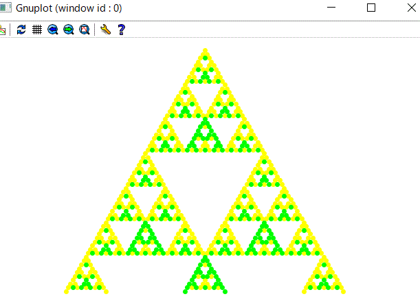

戻る
ーーーーーーシェルビンスキーのガスケットーＲａｃｋｅｔその１－－－－－－
以前に関数型プログラミングを少しかじったが（）の多さに辟易して挫折したことがあります。
ＬＩＳＰは結構ネットで勉強しましたが、結局身につかず。
今回Ｒａｃｋｅｔを少しかじってＬＩＳＰよりもなんとなく敷居が低いかもと。
Ｒａｃｋｅｔのサンプルプログラムを少しずつ紹介していきます。
ほとんどネットで検索したのと同じですが、実行できない場合は若干修正してあります。
フラクタル図形のシェルピンスキーのガスケット（三角形）を描画するコードが
下記のＹｏｕｔｕｂｅで動画で説明されています。
割とわかりやすいほうなので参考までに紹介します。
（自分独自でプログラミングできるわけではないのですが）
実行して描けると嬉しいです。
https://www.youtube.com/watch?v=-DTaSk5QtVk
以下にコードを紹介します。
(require 2htdp/image)
(define serp0 (triangle 15 'solid 'green))
(define (serp d)
(if (zero? d) serp0
(above (serp (sub1 d))
(beside
(serp (sub1 d))
(serp (sub1 d))))))
以上を実行してから serp0 (serp 1)とか(serp 2)などと数字を増やしていくと
たくさんの三角形が描けます。
（上記 (sub1 d)は (- d 1) と同じでｄの値を１ずつ減らしていく関数です。
ちなみに(add1 d)は(+ d 1) と同じです。）
abobe とか beside は上とか両側に図形を描く関数みたいなものですが（たぶん）
ｇｏｏｇｌｅで abobe かつ racket で検索すれば
Ｒａｃｋｅｔのドキュメンテーションに載っています。（英文ですが）
 ;
ーーーーーーコッホ曲線ーRacketその２－－－－－－
;
ーーーーーーコッホ曲線ーRacketその２－－－－－－
フラクタル図形のコッホ曲線の描画のプログラムをネットで見つけましたので、紹介します。
（若干修正してあります）
(require picturing-programs)
(let koch ([d 3])
(cond
((zero? d)
(line 10 0 "black"))
[else(beside/align
"bottom"
(koch (- d 1))
(rotate 60 (koch (- d 1)))
(rotate -60 (koch (- d 1)))
(koch (- d 1)))]))
上記の(let koch ([d 3]) の3を４とか５に変えればより深度の大きいフラクタル図形になります。
 ;
ーーーーーークイックソート（Ｒａｃｋｅｔその３）－－－－－－
;
ーーーーーークイックソート（Ｒａｃｋｅｔその３）－－－－－－
クイックソートのプログラムを紹介します。
出典は次のサイトです。
http://ssh-2014.melt.kyutech.ac.jp/
(define qsort
(lambda (xs)
(cond
((null? xs) null)
(else
(append
(qsort (filter (lambda (x)(< x (car xs))) xs))
(filter (lambda (x)(= x (car xs))) xs)
(qsort (filter (lambda (x) (> x (car xs))) xs)))))))
上記を実行してから
（エラーが出たら言語の選択でｂｅｇｉｎｉｎｇ ｓｔｕｄｅｔから
ａｄｖａｎｃｅｄ ｓｔｕｄｅｎｔ に変更します）
そして、
(qsort '( 3 2 1 6 5 9 4 0 ))
を実行するとリストの中がソートされます。
ーーーーーー階乗のプログラム（Ｒａｃｋｅｔその４）－－－－－－
階乗のプログラムをＲａｃｋｅｔで作ってみました。
ネットで検索すると再帰を使うと大体次のようなふうになります。
(define
(fact n)
(cond
((zero? n) 1)
(else (* n (fact (- n 1))))))
普通は、Ｒａｃｋｅｔでは代入を使わないので、ｆｏｒ文は必要でないということみたいですが、
あえて手続き型言語みたいにＲａｃｋｅｔでつくると次のようになりました。
(define a 1)
(define (fact-list-for n)
(for ([i n])
(set! i (+ i 1))
(display i)
(set! a (* a i))
(display " ")
(display a)
(display "\n")))
(fact-list-for 10)
関数型言語であるＲａｃｋｅｔでは、
このプログラムは泥臭いのでこういうふうにつくってはいけないのですが、
練習のために挑戦してみました。
（結構時間がかかりました。また、Ｄｒｒａｃｋｅｔでは動きませんので、
Ｒａｃｋｅｔに張り付けてやっと動きました。）
ｉｆ文を使っても作れるのかな、つくれないのかなと考えています。
ーーーーーーフィボナッチ数列（Ｒａｃｋｅｔその５）－－－－－－
フィボナッチ数列のシンプルなサンプルプログラムを紹介します。
(define (fib n)
(fib-iter 1 0 n))
(define (fib-iter a b c)
(if (= c 0)
b
(fib-iter (+ a b) a (- c 1))))
上記を実行してから
(fib 1) → １
(fib 2) → １
(fib 3) → ２
(fib 4) → ３
(fib 5) → ５
などと実行します。
〇もうひとつフィボナッチ数列のサンプルプログラムを
「素数夜曲」（吉田 武 著）から
(require (lib "1.ss" "srfi"))
(define (fib n)
(cond ((= n 0) 0)
((= n 1) 1)
(else (+ (fib (- n 1)) (fib (- n 2))))))
以上を実行してから
(map fib(iota 16))
を実行すると
(list 0 1 1 2 3 5 8 13 21 34 55 89 144 233 377 610)
ーーーーーーＦｉｚｚＢｕｚｚ問題（Ｒａｃｋｅｔその６）－－－－－－
FizzBuzz問題という有名なプログラミングの問題があります。
私も最近ネットで知ったのですが、次のサイトにシンプルなＲａｃｋｅｔのコードがありましたので紹介します。
https://news.ycombinator.com/item?id=8447761
(define (fizz-buzz n)
(match (list (modulo n 3) (modulo n 5))
[(list 0 0) "FizzBuzz"]
[(list 0 _) "Fizz"]
[(list _ 0) "Buzz"]
[_ n]))
(for [(i (range 100))]
(displayln (fizz-buzz i)))
実行結果は次のようになります。
１から１００まで数えて、
３の倍数の時は Ｆｉｚｚ と応答し
５の倍数の時は Ｂｕｚｚ と応答し
３の倍数でもあり５の倍数でもあるときは ＦｉｚｚＢｕｚｚ と応答し
その他の時は そのまま 応答します。
FizzBuzz
1
2
Fizz
4
Buzz
Fizz
7
8
Fizz
Buzz
11
Fizz
13
14
FizzBuzz
16
17
ーーーーーーパスカルの三角形（Ｒａｃｋｅｔその７）－－－－－－
「素数夜曲ー女王陛下のＬＩＳＰ」（吉田 武 著）という本があります。
ページが多くて重たいですが、最後の方に載っているカラーの作図が魅力的な本です。
また、帯にある「独学とは再帰なり」（壮大な附録と共に独学の書復活）という言葉にひかれて５年ほど前に購入しました。
いつかはこんな描画ができたらなあと思っていましたが、最初に Gauche で始めたのがいけなかったのか、
開発環境を整えるのに挫折してしまいました。
というか、今にして思えば、ネットでフリーソフトをダウンロードする、
それも英語のページからというのに慣れていなくて、
パスの通し方がわからないとか、パソコンの基礎がなかったのだと思います。
その後 Racket を学ぶ機会があったので、今回初めて腰をすえて取り組みました。
（全部はとても読めませんので、掲載されているカラーの作図
ーパスカルの三角形と循環小数の可視化及びその周辺に限りました。）
以下は、私のＲａｃｋｅｔプログラム習作です。
内容は、パスカルの三角形を剰余で分類して色わけするプログラム（Ｒａｃｋｅｔ）です。
「素数夜曲」のＤ．6
「パスカルの三角形と剰余」とほぼ同じです。
文字どおり習作で、私のオリジナルなものはほとんどありませんが、
gnuplot で描画ができてうれしかったのでまとめておきます。
（１）階乗のプログラム(n!=n*(n-1)*(n-2)*・・3*2*1)
(require (lib "1.ss" "srfi"))
(define (fact n)
(cond
((zero? n) 1)
(else (* n (fact (- n 1))))))
（実行例）
>(fact 0)
1
> (fact 1)
1
> (fact 2)
2
> (fact 3)
6
> (fact 4)
24
> (fact 5)
120
（２）二項係数(binomial coefficients) (nCr=n!/(r! (n-r)!)
(define (bc n r)
(/ (fact n) (* (fact r) (fact (- n r)))))
（実行例）(a + b)の3乗 1*(a^3) + 3*(a^2*b) + 3*(a*b^2) + 1*(b^3)の各係数
(bc 3 0)
1
> (bc 3 1)
3
> (bc 3 2)
3
> (bc 3 3)
1
（３）パスカルの三角形の第（ｎ＋１）行の列
(define (row n)
(map (lambda (x)(bc n x))(iota (+ n 1) 0 1)))
（実行例）
> (row 3)
'(1 3 3 1)
> (row 4)
'(1 4 6 4 1)
（４）パスカルの三角形（リストの形）
(define (pascal n)
(map (lambda (x) (row x)) (iota (+ n 1) 0 1)))
（実行例）
> (pascal 5)
((1) (1 1) (1 2 1) (1 3 3 1) (1 4 6 4 1) (1 5 10 10 5 1))
（５）出力形式（縦列の形）
(define (output lst)
(let loop ((i 0)) (newline)
(if (= i (length lst))
'end
(begin (display (list-ref lst i))
(loop (+ i 1)) ))))
（実行例）
> (output (pascal 5))
(1)
(1 1)
(1 2 1)
(1 3 3 1)
(1 4 6 4 1)
(1 5 10 10 5 1)
'end
（６）剰余によって分類
(define (row-mod n m)
(map (lambda (x) (modulo x m)) (row n)))
(define (pas-mod n m)
(map (lambda (x) (row-mod x m)) (iota (+ n 1) 0 1)))
（実行例）
> (row 3)
'(1 3 3 1)
> (row-mod 3 3)
'(1 0 0 1)
> (row 4)
'(1 4 6 4 1)
> (row-mod 4 3)
'(1 1 0 1 1)
> (output (pas-mod 5 3))
(1)
(1 1)
(1 2 1)
(1 0 0 1)
(1 1 0 1 1)
(1 2 1 1 2 1)
（７）各段の係数の位置座標を定める
剰余の値によって色の塗分けをする。
そのための準備として、まず係数が配置される座標を決める。
ｘｙにおける座標系の原点（０，０）に、三角形の頂点をとる。
全体は下向きで、ｙの座標値はすべてマイナスになる。
ｘ座標軸における各係数の間隔はすべて２とする。
(define (tri-n n)
(let ((y (* -1 n)))
(map (lambda (x) (list x y)) (iota (+ n 1) y 2))))
（実行例）
> (tri-n 0)
'((0 0))
> (tri-n 1)
'((-1 -1) (1 -1))
> (tri-n 2)
'((-2 -2) (0 -2) (2 -2))
> (tri-n 3)
'((-3 -3) (-1 -3) (1 -3) (3 -3))
（８）位置座標と剰余の２つの要素を１つのリストにする
（実行例）
> (mod-xy 0 2)
'((0 0 1))(define (mod-xy n m)
(map flatten
(map list (tri-n n) (row-mod n m))))
(define (plot-data n m)
(apply append
(map (lambda (x) (mod-xy x m)) (iota (+ n 1) 0 1))))
> (mod-xy 1 2)
'((-1 -1 1) (1 -1 1))
> (mod-xy 2 2)
'((-2 -2 1) (0 -2 0) (2 -2 1))
> (mod-xy 3 2)
'((-3 -3 1) (-1 -3 1) (1 -3 1) (3 -3 1))
> (plot-data 3 2)
'((0 0 1)
(-1 -1 1)
(1 -1 1)
(-2 -2 1)
(0 -2 0)
(2 -2 1)
(-3 -3 1)
(-1 -3 1)
(1 -3 1)
(3 -3 1))
（７）描画ソフト（ｇｎｕｐｌｏｔ）への対応
上で得られたデータを読み込み、その値に画素を対応させる。
描画ソフトgnuplotに対応させるため、データのブロック化をする。
そのため、同じ剰余を持つ座標値をまとめる。
(define (key-1 obj lst)
(let loop ((lst lst) (tmp '()))
(cond ((null? lst) tmp)
((equal? (caddar lst) obj)
(loop (cdr lst) (cons (car lst) tmp)))
(else (loop (cdr lst) tmp)))))
(define (extreme lst)
(map (lambda (x) (list (apply min x) (apply max x)))
(apply map list lst)))
(define (build n m)
(let* ((lst (plot-data n m))
(min-v (car (list-ref (extreme lst) 2)))
(max-v (cadr (list-ref (extreme lst) 2)))
(LF '()))
(let loop ((k min-v) (tmp '()))
(cond ((< max-v k) (reverse tmp))
(else (loop (+ k 1)
(cons LF (append (key-1
k lst)
tmp))))))))
gnuplotが空行を目印にデータを１つのブロックとして認識するのに対応して
１つのブロック毎にＬＦの名前で空リストを挿入している。
（実行例）
> (key-1 0 (plot-data 3 2))
'((0 -2 0))
> (key-1 1 (plot-data 3 2))
'((3 -3 1)
(1 -3 1)
(-1 -3 1)
(-3 -3 1)
(2 -2 1)
(-2 -2 1)
(1 -1 1)
(-1 -1 1)
(0 0 1))
以上を組み合わせて、剰余の小さい順にリストを再構成する。
> (build 3 2)
'((0 -2 0)
()
(0 0 1)
(-1 -1 1)
(1 -1 1)
(-2 -2 1)
(2 -2 1)
(-3 -3 1)
(-1 -3 1)
(1 -3 1)
(3 -3 1)
())
（８）ファイル出力
(define (read-file file-name)
(let ((p (open-input-file file-name)))
(let loop((ls1 '())(c (read-char p)))
(if (eof-object? c)
(begin
(close-input-port p)
(list->string (reverse ls1)))
(loop (cons c ls1) (read-char p))))))
(define (status name)
(string-append "C:\\Users\\user\\Desktop\\bit-racket\\"
(symbol->string name)))
(define (save->file name proc)
(call-with-output-file (status name) (lambda (x) (write proc x))) 'ok)
(define (save->data name proc opt)
(define (nl-add lst x)
(let* ((fn0 (lambda (k) (list-ref lst k)))
(fn1 (lambda (y) (write y x)
(write-char #\space x)))
(store (lambda (z)
(if (and (null? opt) (list? (fn0 z)))
(map fn1 (fn0 z))
(write (fn0 z) x)))))
(let loop ((i 0))
(cond ((= i (length lst)) 'ok)
(else (store i) (newline x) (loop (+ i 1))) ))))
(call-with-output-file (status name) (lambda (x) (nl-add proc x))))
(save->data 'pascal3.dat (build 63 3) '())
データが２重のリストの場合、引数 opt の入力の有無によって分岐する。
opt が null の場合には、内部のリストも外し、空白の分離記号とする裸のデータを、
内部リストを単位として、改行を加えて保存する。
（９）ｇｎｕｐｌｏｔのコマンド
set size ratio 0.87
unset border
unset key
unset tics
set style line 1 pt 7 lc rgb "white"
set style line 2 pt 7 lc rgb "yellow"
set style line 3 pt 7 lc rgb "green"
plot 'pascal3.dat' using 1:2 every :::0::0 with
points ls 1,\
'pascal3.dat' using 1:2 every :::1::1 with points ls 2,\
'pascal3.dat' using 1:2 every :::2::2 with points ls 3
